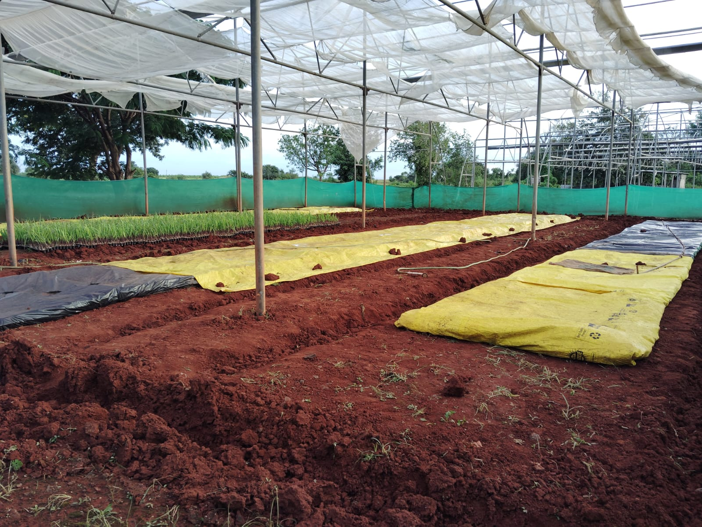
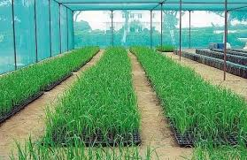
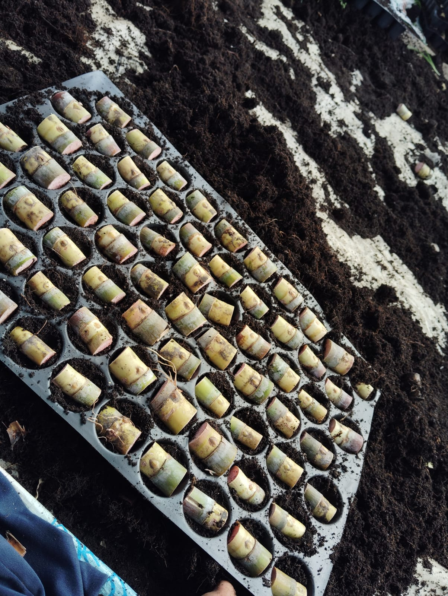
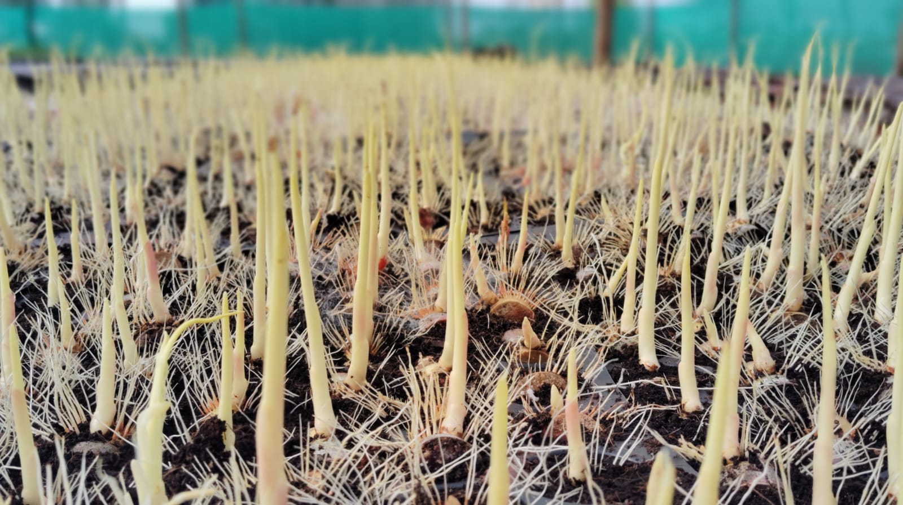
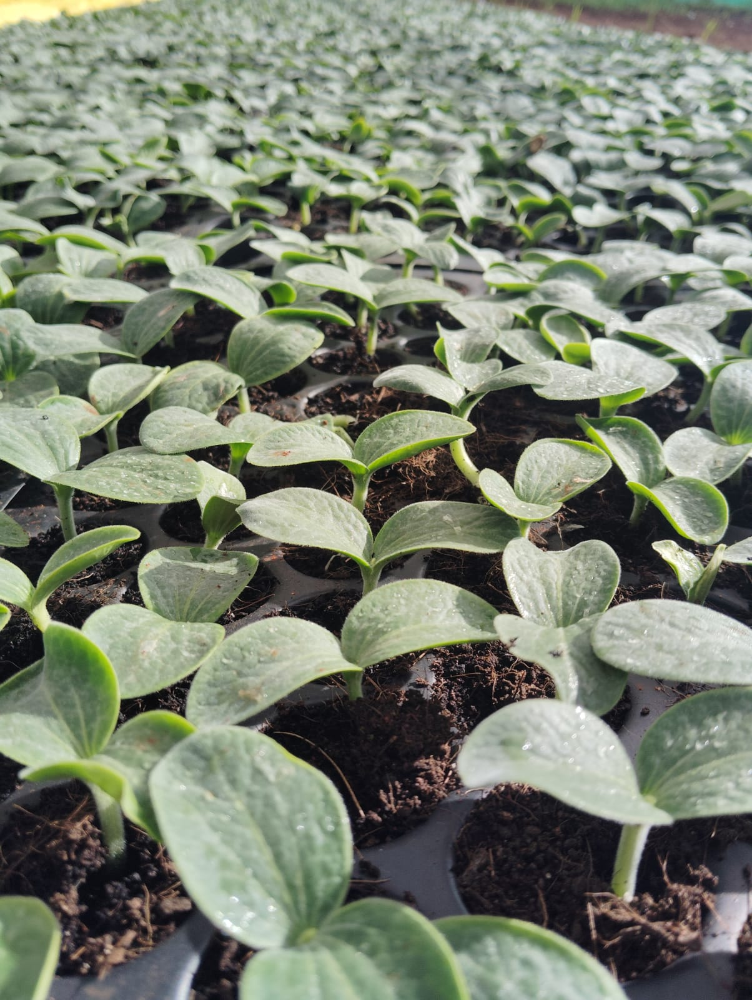
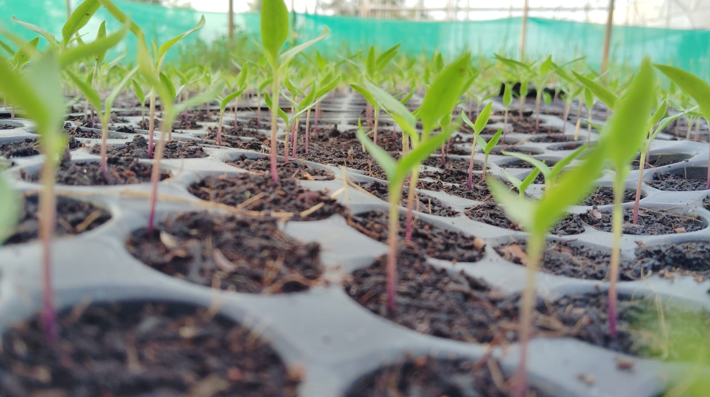

Providing high-yield, disease-resistant sugarcane saplings raised scientifically for farmers nationwide.
Traditional field sets often rot or fail. Our pre-rooted healthy nursery saplings ensure uniform field growth with zero missing gaps.
Since saplings are already 30 days mature upon delivery, you reduce field preparation efforts, early weeding costs, and water usage cycles.
Scientifically bred single-bud sets produce vigorous tillering, thicker cane girth, and up to a 20-30% boost in overall tonnage per acre.
The golden standard variety. Renowned for high drought tolerance, excellent ratoon crop yield, and consistently great sugar recovery rates.
An exceptional early-maturing variety highly regarded for its impressive cane thickness, erect growth habit, and early high sugar accumulation.
We source clean mother canes to extract healthy single buds. The buds undergo specific organic treatments to safeguard against seed-borne pests and fungal diseases.
Buds are embedded carefully into premium coco-peat inside pro-trays, enriched with bio-fertilizers like Trichoderma and Azotobacter to promote expansive initial root architecture.
For the first 25 days, saplings live inside a climate-controlled greenhouse receiving precise humidity and shade nourishment away from harsh elements.
Before leaving the nursery, the plants spend 10 days in open-sun hardening bays so they safely handle field transplantation shock without wilting.






| Management Parameter | Recommended Guidelines for Saplings |
|---|---|
| Row Spacing | Maintain a wider furrow distance of 4 to 5 feet. This permits abundant solar radiation for optimal tillering and allows light mini-tractor mechanical weeding. |
| Plant to Plant Distance | Space individual saplings 1.25 to 1.5 feet apart inside the furrow line. This minimizes canopy crowding and preserves heavy cane weight. |
| Basal Nutrition | Apply well-decomposed farmyard manure (FYM) or compost combined with Single Super Phosphate (SSP) directly in furrows prior to setting the saplings. |
| Irrigation Trick | Lightly irrigate your farm furrows immediately before and right after transplanting to establish quick root-to-soil contact. |
Pawar Sugarcane Nursery,
A/P Palashi Tal. Khatav Dis. Satara,
Maharashtra, India - 415512
Phone: +91 9922417682
Monday - Sunday: 8:00 AM - 6:00 PM
Open all year round for sapling bookings.